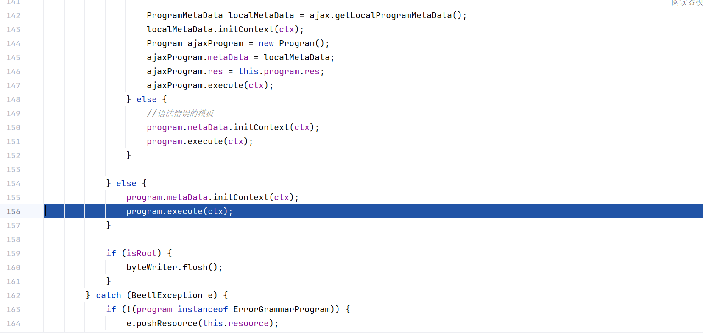

本篇文章仅用于技术交流学习和研究的目的，严禁使用文章中的技术用于非法目的和破坏。
前言
拿到了前段时间ciscn 2024 final的web题附件，来复现一下Fobee这道题，顺便学习一下beetl的模板注入。
3.15.x及以前的版本
过滤的很少，随便绕过。贴几个公开的poc：
https://gitee.com/xiandafu/beetl/issues/I6RUIP
https://gitee.com/xiandafu/beetl/issues/I914H3
3.16.0
3.16.0是题目使用的版本也是本文使用的版本。
测试环境为java8u65， beetl 3.16.0， solon 2.8.5
入口
@Mapping("/render")
public ModelAndView render(String pass, String tp) throws Exception {
ModelAndView model = new ModelAndView("render.htm");
if (pass != null && pass.equals(password)) {
byte[] decode = Base64.getDecoder().decode(tp);
String result = BeetlKit.render(new String(decode), new HashMap());
System.out.println(result);
model.put("msg", getMD5Hash(result));
} else {
model.put("msg", "Render Page");
}
return model;
}
渲染过程
由renderTo进入execute函数。然后遍历所有要执行的语句然后依次执行。  每条语句的具体执行代码在org.beetl.core.statement.NativeCallExpression#evaluate函数。
public Object evaluate(Context ctx) {
Class targetCls = null;
Object targetObj = null;
NativeNode lastNode = null;
if (insNode != null) {
targetObj = insNode.ref.evaluate(ctx);
if (targetObj != null) {
targetCls = targetObj.getClass();
}
lastNode = insNode;
} else {
targetCls = ctx.gt.loadClassBySimpleName(this.clsNode.clazz);
if (targetCls == null) {
throw new BeetlException(BeetlException.NATIVE_CALL_EXCEPTION, "该类不存在")
.pushToken(GrammarToken.createToken(clsNode.clazz, token.line));
}
lastNode = clsNode;
}
for (NativeNode node : chain) {
...
...
} else if (node instanceof NativeMethodNode) {
NativeMethodNode methodNode = (NativeMethodNode) node;
String method = methodNode.method;
Expression[] expList = methodNode.params;
this.checkPermit(ctx, targetCls, targetObj, method);
Object[] args = expList.length == 0 ? ObjectUtil.EMPTY_OBJECT_ARRAY : new Object[expList.length];
Class[] parameterType = new Class[args.length];
for (int i = 0; i < expList.length; i++) {
args[i] = expList[i].evaluate(ctx);
parameterType[i] = args[i] == null ? null : args[i].getClass();
}
this.checkNull(targetCls, lastNode);
ObjectMethodMatchConf mf = ObjectUtil.findMethod(targetCls, method, parameterType);
if (mf == null) {
throw new BeetlException(BeetlParserException.NATIVE_CALL_INVALID,
"根据参数未找到匹配的方法" + method + BeetlUtil.getParameterDescription(parameterType))
.pushToken(GrammarToken.createToken(token.text, token.line));
}
if (targetObj == null && !Modifier.isStatic(mf.method.getModifiers())) {
throw new BeetlException(BeetlException.NULL)
.pushToken(GrammarToken.createToken(token.text, token.line));
}
try {
if(mf.contextRequired){
ArrayList tempList = new ArrayList(Arrays.asList(args));
tempList.add(ctx);
args = tempList.toArray();
}
targetObj = ObjectUtil.invoke(targetObj, mf, args);
targetCls = targetObj == null ? null : targetObj.getClass();
...
...
}
lastNode = node;
}
return targetObj;
}
黑名单主要针对方法调用，其他代码省略。
beetl将每条语句拆分为targetCls，targetObj，method和args。在org.beetl.core.DefaultNativeSecurityManager#permit函数中对targetCls进行检查：
public boolean permit(Object resourceId, Class c, Object target, String method) {
if (c.isArray()) {
// 允许调用，但实际上会在在其后调用中报错。不归此处管理
return true;
}
String name = c.getName();
String className = null;
String pkgName = null;
int i = name.lastIndexOf('.');
if (i != -1) {
pkgName = name.substring(0, i);
className = name.substring(i + 1);
} else {
// 无包名，允许调用
return true;
}
if (pkgName.startsWith("java.lang.reflect")) {
//反射类，不允许调用 https://gitee.com/xiandafu/beetl/issues/I8RU01
return false;
}
if (pkgName.startsWith("java.lang")) {
return !className.equals("Runtime")
&& !className.equals("Process")
&& !className.equals("ProcessBuilder")
&& !className.equals("Thread") // https://gitee.com/xiandafu/beetl/issues/I6RUIP
&& !className.equals("Class") //https://gitee.com/xiandafu/beetl/issues/I6RUIP#note_17223442
&& !className.equals("System")
;
}
if(pkgName.startsWith("java.beans")){
//https://gitee.com/xiandafu/beetl/issues/I914H3#note_24939039
return false;
}
if(pkgName.startsWith("org.beetl")){
//https://gitee.com/xiandafu/beetl/issues/I6RUIP
return false;
}
if(pkgName.startsWith("javax.")){
return false;
}
if(pkgName.startsWith("sun.")){
return false;
}
return true;
}
在此处执行getRuntime时targetCls为java.lang.Runtime，pkgName位java.lang，被限制了，check不通过。
如果check通过，会解析参数并invoke对应函数：
targetObj = ObjectUtil.invoke(targetObj, mf, args);
出网利用
没办法直接利用，尝试从solon和beetl代码中找找可利用的类。
org.noear.solon.Utils类中有两个静态方法与反射有关：
public static Class<?> loadClass(String className) {
return ClassUtil.loadClass(className);
}
public static <T> T newInstance(String className) {
return ClassUtil.tryInstance(className);
}
通过这两个方法可以实例化任意类。
JdbcRowSetImpl没被过滤，可以尝试jndi注入。
不出网利用
newInstance部分绕过了，还差invoke部分。
org.noear.solon.core.wrap.MethodWrap类中实现了invoke功能：
public Object invoke(Object obj, Object[] args) throws Throwable {
try {
return method.invoke(obj, args);
} catch (InvocationTargetException e) {
Throwable e2 = e.getTargetException();
throw Utils.throwableUnwrap(e2);
}
}
org.noear.solon.core.AppContext#methodGet会对method进行包装：
public MethodWrap methodGet(Method method) {
MethodWrap mw = methodCached.get(method);
if (mw == null) {
SYNC_LOCK.lock();
try {
mw = methodCached.get(method);
if (mw == null) {
mw = new MethodWrap(this, method);
methodCached.put(method, mw);
}
} finally {
SYNC_LOCK.unlock();
}
}
return mw;
}
@org.noear.solon.Solon.app().context()可以获取上下文，也就是Appcontext对象。
要包装函数需要先获得Method对象。
org.noear.solon.core.util.ReflectUtil#getDeclaredMethods可以获得所有声明方法。
public static Method[] getDeclaredMethods(Class<?> clazz) {
return global.getDeclaredMethods(clazz);
}
这样就可以调用任意类的任意public函数了。
回显
org.noear.solon.core.handle.ContextUtil#current可获取当前线程的上下文，这里的context和appcontext不一样，此处的context只包含本次请求的请求包和返回包等内容。
public static Context current(){
Context tmp = threadLocal.get();
if (tmp == null && Solon.cfg().testing()) {
tmp = new ContextEmpty();
threadLocal.set(tmp);
}
return tmp;
}
solon使用的是smarthttp。smhttpctx对象有一个output函数用来向返回包写数据。
org.noear.solon.boot.smarthttp.http.SmHttpContext#output
public void output(byte[] bytes) {
try {
OutputStream out = this.outputStream();
if (this._allows_write) {
out.write(bytes);
}
} catch (Throwable var3) {
throw new RuntimeException(var3);
}
}
将数据写入byte[]中再代用output就可以回显了。
getInputStream()获得执行结果的inputstream对象，byte[]对象通过反射Array获得。
结尾
目前beetl的3.17.0版本已经默认使用白名单模式 链接